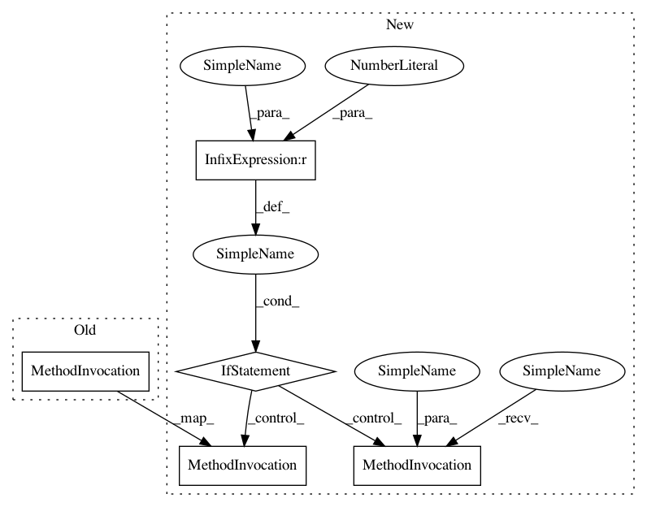

b6443232013e8d248fe26f59630d43bc9688df06,losses.py,,loss,#,25
Before Change
regression_diff - 0.5 / 9.0
)
regression_losses.append(regression_loss[positive_indices, :].mean())
return torch.stack(classification_losses).mean(), torch.stack(regression_losses).mean()
After Change
0.5 * 9.0 * torch.pow(regression_diff, 2),
regression_diff - 0.5 / 9.0
)
if positive_indices.sum() > 0:
regression_losses.append(regression_loss[positive_indices, :].mean())
else:
regression_losses.append(torch.Tensor([0]).float().cuda())
return torch.stack(classification_losses).mean(), torch.stack(regression_losses).mean()
In pattern: SUPERPATTERN
Frequency: 1
Non-data size: 5
Instances
Project Name: yhenon/pytorch-retinanet
Commit Name: b6443232013e8d248fe26f59630d43bc9688df06
Time: 2018-04-29
Author: yannhenon@gmail.com
File Name: losses.py
Class Name:
Method Name: loss